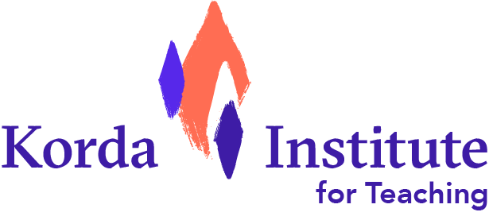
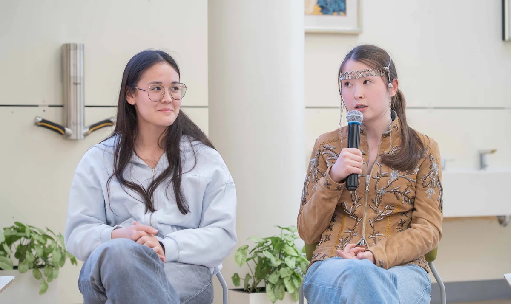
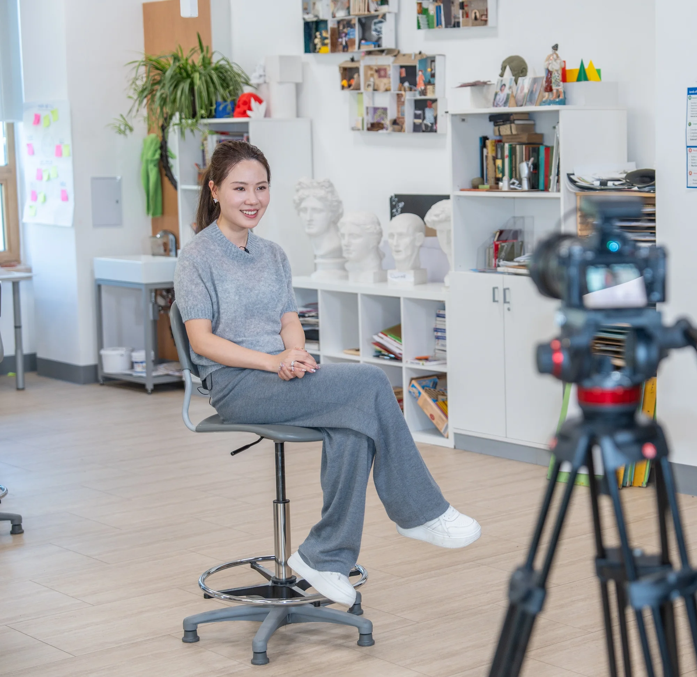

Готовим к реальной жизни,
а не к тестам из прошлого
В мире, где ИИ генерирует ответы за секунды, детям нужны навыки, которые не поддаются автоматизации: критическое мышление, смелость, эмпатия и умение воплощать идеи в реальность
с полной аккредитацией CIS и WASC
развивает критически
важные навыки 21 века
Инновационная программа повышенной академической сложности
10-12 классы
предпринимательского
мышления
Почему это важно сейчас
Мир изменился школа должна меняться
вместе с ним
Десятилетиями успех в школе означал: запомни информацию, выполни инструкцию, дай ожидаемый ответ. Этот подход устарел.
Сегодня ИИ создает тексты, код и решения быстрее любого эксперта. Главный вопрос для родителей уже не что будет знать мой ребенок, а как он будет применять свои знания?
Если мы учим детей так, как учили вчера, мы лишаем их будущего
Будет ли мой ребенок понимать, что делать, когда ответ не очевиден,
проблема реальная, а ее решение может изменить жизнь людей?
Именно к такой
реальности готовит HTA
реальности готовит HTA
ИИ заменяет исполнителей
Рутинные задачи выполняет ИИ. Ценность человека в навыках, которые невозможно делегировать машине: критическом мышлении, коммуникации, сотрудничестве и умении находить решения в условиях неопределенности
Мир требует творцов, не потребителей
Работодатели ищут людей, которые умеют ставить правильные вопросы, решать нестандартные задачи и создавать ценность для общества, а не следовать инструкциям
Перемены неизбежны и их скорость увеличивается
Половина профессий, которые будут существовать через 10 лет, еще не изобретены. Задача школы подготовить учеников к неопределенности и постоянным изменениям
ДНК системы обучения в HTA
Обучение в HTA не простое накопление знаний, а умение ими пользоваться в реальном мире
HTA - единственная в Казахстане школа для тех, кто готовится к миру, который неизбежно изменит ИИ
Korda Method School
Навыки развиваются через
практику и действие

Korda Method School погружает учеников в реальную жизнь. Они учатся определять проблему, глубоко исследовать контекст и потребности пользователей, тестировать идеи и защищать свое решение перед экспертами из этой сферы.
Обратная связь приходит не в виде оценки. Это вопрос, вызов, новое ограничение, более сильная идея - и ученики дорабатывают и улучшают свои решения через циклы обратной связи. Это развивает внутреннюю устойчивость, гибкость мышления и готовность пробовать снова.

Проектная задача:
Запустить 1000 эко-шаттлов по Алматы
Партнер:
ХХХХХХХ
Проектная задача:
Улучшить качество воздуха в городе
Партнер:
ХХХХХХХ
Проектная задача:
Разработать прибыльную стратегию, сохраняя верность миссии компании
Партнер:
ХХХХХХХ
Проектная задача:
Создавать стартапы в сфере медицины, устойчивого развития, сокращения пищевых отходов и практических жизненных навыков
Партнер:
ХХХХХХХ
Подробнее о других проектах на странице Instagram


Курс по предпринимательству
Мышление, которое нужно ученикам, когда будущее невозможно предсказать
За год ученики проходят путь от реальных задач казахстанского бизнеса до собственного стартапа, развивают предпринимательские навыки и учатся справляться с неопределенностью, решая сложные проблемы для реального мира.
Мы не растим предпринимателей. Мы развиваем предпринимательское мышление: способность видеть и определять проблемы, тестировать идеи, принимать решения и создавать ценность для общества.
Подробнее о курсеMinerva Baccalaureate
Программа повышенной академической сложности для старшей школы
Обучение проходит по методике Flipped Classroom - принцип обучения, при котором учащиеся самостоятельно изучают новый материал и время работы в классе посвящено применению знаний и непрерывному оцениванию и закреплению знаний и навыков.
Результат обучения напрямую зависит от качества самостоятельной подготовки к занятиям в классе. Преподавание ведется на английском языке.
Выпускники получают два диплома - казахстанский аттестат и американский Minerva Baccalaureate.
Узнать подробнееСчастливое детство
Невозможно заранее предсказать, каким вырастет человек. Можно только создать условия, в которых он начнет развиваться и раскрываться
Каждого знают
Мы видим в учениках личностей: их сильные стороны, потребности, эмоции и личные истории.
Безопасность - физическая, эмоциональная и социальная
Взрослые замечают ранние сигналы и реагируют до того, как ситуация стала проблемой.
Чувство принадлежности
Ученики учатся слушать, сотрудничать и строить доверительные отношения каждый день.
Рост через рефлексию
Мы помогаем ученикам понимать себя, делать ответственный выбор и расти из ошибок.
Жизнь в HTA
Образование — это не подготовка к жизни; образование — это сама жизнь




Голоса учеников
92%
учеников HTA говорят, что любят свою школу
Опрос учеников, март 2026
Здесь нет ограничений твоей креативности. Школа всегда мотивирует выходить за рамки. Ты не просто заучиваешь материал - ты учишься мыслить, анализировать и применять знания в реальной жизни
Амина11 класс
Учителя общаются с тобой так, что ты ощущаешь: ты в первую очередь человек, а потом уже человек
Ибраим8 класс
Здесь нет ограничений твоей креативности. Школа всегда мотивирует выходить за рамки. Ты не просто заучиваешь материал - ты учишься мыслить, анализировать и применять знания в реальной жизни
Амина11 класс
В XXI веке мы можем стать свидетелями появления многомиллионного неработающего класса… Этот «бесполезный класс» будет не просто неработающим - он будет неработоспособным
Любопытство, смелость, креативность, сострадание и коммуникация становятся особенно важными навыками в эпоху ИИ
Выбирайте HTA
Здесь ученики развивают смелость, креативность и способность создавать ценность, чтобы быть готовыми к вызовам быстро меняющегося мира.
Портрет выпускника